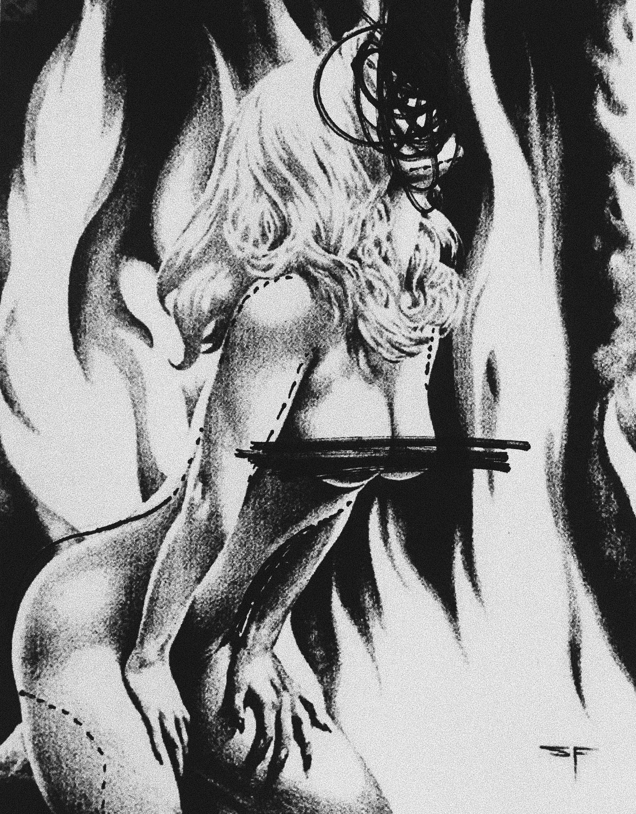

Crowd surf with your eyes. It’s an exhilarating Californian party which means beautiful girls surrounded by much older men. I watch them while I’m sitting pretty at the bar.
Their faces begin to swim together and it’s difficult to differentiate the eyes and lips and the hair because it all becomes the same girl on the magazines, TVs and billboards. But I spot Jemima immediately because she stands out - slightly more sparkly than the rest. She’s in a thin canary yellow dress, her form a stark outline against the Mondrian adorning Hugo’s living room. Sing-song-y around the right people. She’s all soft, cute – no to the freefalling liquor. Everything’s soft dusty browns, liquid caramels and nude leathers. Gin sloshes on my bare skin.
Headrush. Blood pumping but somehow, the world turns slower. I absorb the finer details. The similarities between us. I could feel that we had the same mind. We were snow sisters. We had the same glassy-eyed dismal reality where finding anything worth feeling jittery over was hard. Were we the small-town girl walking into Hollywood cliché? No. We weren’t a dime a dozen. We both hid that history and cleaned our closets of any skeletons, any dusty remains. The dust glittered only over our shoulders at Christmases and Birthdays when we became real actresses mustering up a lie about how hard it was to make rent in LA and how waitressing was rough, our tails tucked between our legs as we guiltily accepted the accompanying cheque in the mail for a hundred dollars to help the month go by a little quicker. We became the girl we never wanted to be for those minute phone calls and then continued living in our fragile realities.
All the secrets hidden in the cocaine, Pablo Neruda and shitty philosophy from guys with thin moustaches and greasy roots. This very type of guy buys me a drink right now attracted to me like a vulture to his drunk bunny prey. I greedily gulp down the glass of Prosecco ignoring his advances. Too late, his hand plays with my skirt. Jemima and I knew the world in a way which was too familiar and as I watch Hugo’s fingers dance on her dress like the dead-eyed Playboy bunny by the pool – I know that we will have the same ending too.
I hurl into the bushes. Watery. Double vision for a quick second until I no longer feel my lashes. Hiccup crazily. Forgetful fumbling for my phone. And I see neon red eyes leeching onto my skin. I hurl some more forgetting I had just puked, an oblivion drunk. Slowly falling into the scratchy bushes, a second coating of wooliness. A hand collects my messy hair into a ponytail. Momentarily, I am stunned. But her voice whispers into the back of my throbbing head. I watch her bounce away golden daisy bobbing into the Hollywood Hills dancing for the wolves to never surface again. I’m haunted by her words. Where there is money, there is always blood. The vampires circle in. I don’t touch another drink.
I latch on-to people. Candy tells me this in her Arizonian sweat cabin. The mid-west sun twinkles off the carefully placed moonstone slices dancing from the ceiling and the sweat lodge has a magical feeling. Then I remember that I’m in a sweat lodge. Candy takes a deep breath and I follow. She exhales and I feel comfortable. Our energies align.
Candy, I know I’m going to be a star - very soon - because it’s written in the Tree. I’m the middle child in a perfect family. The eldest and youngest sons became everything their parents could ever want – the strong, caring, humble, intelligent types who could hold down healthy relationships, respect women and take an interest in the world around them with a quiet introspection. Why do I find the very idea of being this type of person repugnant?
Candy nods very serious. The smoke is soft and vapoury collecting in swirls around her arms and her lips part very slightly soft exhales. Hallucinogen sparkles in the air. I focus on the ceiling intently following the kaleidoscopic colours twirling through the grass smoke. Candy giggles and I smile wide my teeth pearly spit toothpaste trident foam morning routine paid off. I exhale and the wood is a purply haze like the Prince song, and I am suddenly profoundly sad because Prince is dead.
I had a vision the other day where I was standing over the Hollywood sign peering over into the slums of LA. And the people looked up at me and smiled in awe, surrendering to me because I’m the girl guys want to be with, and girls want to be… I think I’m in love again.
I watch the cabin walls bend in and out of shape. Perhaps it’s cabin fever but I’m ready to latch onto this idea like a tick and suck it dry until it becomes thin and papery in my palm, ready to be crumpled like a papery A4 sheet. Old habits die hard.

I walk through the warehouse absorbing the cold – shivering baby bunny. Dusty dirt on thin skin. I am the star. Fingers against metal acrid smell. Sign of life – a strip of thin pink lace. Powdery artificial strawberries in the air. I sweep back the thick theatrical black velvet curtains, uncovering the scene beneath. Thirty or so girls are lined up awaiting the casting director’s call. We all are Jemima clones biting her look. One of the camera boys shoots me a coy smile, and I return it. Networking. Hush hush money.
I watch one of the girls mouth something to herself, her fake lips smacking together. I recognise the words she’s mouthing. Playboy did an interview with Jemima which went viral. She told people the truth and they killed her for it. The girl performs this monologue with an intensity that would make Ginsberg swoon as if rehearsing for an Oscar-winning role about a dead porn star with a complexity that was erased off the planet.
Placing my phone on the communal charging tableau, my hand accidently skims past her breast. I ask her if they’re real, and she reassures me they aren’t. I recognise the hungry look that passes over her eye as she bends down daintily to get something from her purse. She hands me a black business card for Dr X. She winks at me. Tell him Jemima sent you. I want to tell her Jemima would never go to a D-List surgeon but
Hugo tells us to shut up and be professionals. Oily fingerprints on his Cuban chain, dusted out signet with diamonds paid for by our Queen. In two lines Jemima’s life is summarised. She was one of the most iconic girls to star in Hugo’s films. She retired with an eight-figure salary at 23 with her future in-tact. The Jemima clones around me hang onto his words with an intensity that only the new girls had.
The camera guys, makeup artists and photographers avoid the intense fluorescent lights in the shadows of the room. They look forward with intense blankness. Hugo takes off my jacket under the lights and tells me to say my lines. He invites me over to his home for a second time.
I wake up at 7am because my body clock is this strange new instrument of regularity. Natural sunlight pours over me and I feel at home. I run my hands under the faucet, pouring some amino-glyceric powder into my palm and wetting it. It covers my face with slippery ease. I splash cold water on my face and wash it off, cleaning my skin of any toxins or impurities which may have accumulated over the night or the past day – all part of the job. Following that, I brush my teeth with a charcoal activated minty foam and a fresh bamboo toothbrush. I spit and watch the black foam dribble from my mouth demonic.
The kitchen is my favourite part of my morning because I have a moment to see the details of my life being curated in real-time. The artwork I purchased on a whim from a gallery opening in New York sits in my living room in its brown cardboard box. I cut it open the box cutter slicing through the packaging with ease. Open up sesame. A woman’s legs cement in opaque silver is spread-eagle under a thick pane of glass. My morning orange juice covers up her vulgar bits. She’s a butterfly or an eagle or something to be critiqued by art theorists and the like. A David Lynch nude hangs on my stark white wall – a tit. Everything is expensive and clean and tasteful. I stare at my naked body installation on the double-glazed panes opening my home to the Hills. Nobody looks in but I can sense the eyes and they fixate on my body.
I dream about how old Hollywood is dead often because it should be sad. It’s all ass and tits, filler and botox, and depression now. There is no talent anymore. But why bother caring about something so insignificant? What, no more red lipstick and pin-curls? Everyone’s tanner, skinnier, bitchier, doped up on amphetamines and a sense of self-importance. If the world’s ending, why not live out this hedonism?
I’m behind Hollywood – looking in over the Laurel Hills. Giant white letters against dried up grass – just behind a huge 80x180 billboard of Jemima or me, I can’t tell anymore. We wear a tiny canary yellow dress in a sexy take on the cherubic southern bell. Our lips are pursed and pouty, half a milligram larger than they were in the last film, “Cure for the Cowboy Blues”. Our waist is smaller and more defined. Our eyes are piercing a bright azure iris. We watch over the entirety of the city. We see the aspiring models, actors, directors, painters, lovers, killers. They gather together and plot our death making sure our destiny will become the low-brow tacky ugly Hollywood tourist sordid underbelly fantasy which would have us dead in a gutter somewhere and a newspaper headline – UNKNOWN GIRL FOUND DEAD IN WEST LA GUTTER.
There is a certain type of person in the world who hates me. I don’t generalise this idea, moreso mull over it. I try to spot them on the bus, coming back from a quick Bikhram session at EnvisionLife, when I’m drinking my routine cold brew at Starbucks. They are the want-nots. The type of person to think that becoming famous is easy. The ones who are quick to dismantle any notoriety or greater-than-life presence any one person can acquire, shaping these pleasures up to luck and/or any other extraneous services one can provide. My brother is one of these people, the brown-nosers. He looks down at me, and I can just see that sad sad look in his eye as he dips his head down at his brown brown shoes. Eyes especially shiny with a jaded entitlement that only bros who had been given everything could muster, chin on hand Rodin’s Thinker, an imposter Rumi. Sighing at the state of the world, the degenerate folk running it, the scum and filth scrubbing it up, whilst never motivating the action for change. But on that technical flaw, he always won because he never admitted to superiority. There was never a clause to prove, twisted Freudian slip fuck.
But why bother arguing with the other half? I would just tell them straight up – you’ll never be famous with that attitude, get the fuck out of Hollywood. You will never fit into this place. We’re love-hungry, attention-starved, unexhausted. The vampires who enjoy the thrill of the chase, where every man, woman and child is prey and everything is fair game because it’s Hollywood, baby. Everyone wants to be famous because everyone wants to be loved. The difference is that some people simply won’t ever be loved like that and that scares them. Some people don’t like pain, but the fall is fun here.